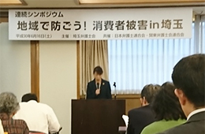

|
|
||||
第54回埼玉県消費者大会実行委員会 6月16日（土）13時30分より、さいたま共済会館会議室にて、埼玉弁護士会・日本弁護士会連合会・関東弁護士連合会主催の連続シンポジウム「地域で防ごう!消費者被害in埼玉」が開催され、第2回プレ学習会の位置づけで消費者大会実行委員会団体から約20人が参加しました。（全体の参加は120人） 今年の第54回埼玉県消費者大会は「自ら考え行動する消費者になろう-誰ひとり取り残さない平和な社会を目指して-」のスローガンをかかげ、4月から県内24の消費者団体が集まり大会に向けた話し合いをすすめています。話し合いの中では、消費者をめぐる問題として、消費者契約法の一部改正や、民法改正による成年年齢引き下げがおこなわれる中で、自ら考え行動する消費者として、何ができるのかについても話し合いました。今回の弁護士会が主催する連続シンポジウムを、地域での見守りの大切さ、先進的な事例を知り、考える機会として、第2回プレ学習会と位置づけ、参加を呼びかけました。 1. 基調講演「被害防止の手法と取り組みについて」 大阪弁護士会の国府弁護士による基調講演がおこなわれました。訪問勧誘・電話勧誘と高齢者の消費者トラブルの現状についてから始まり、消費者安全確保地域協議会の役割と現状、訪問勧誘・電話勧誘を規制する法律の状況、行政・企業・消費者が取り組んでいる防止のための取り組みが報告されました。先進的な事例として、石川県が作成した消費者安全確保地域協議会のつくり方マニュアル、奈良県などの自治体による「お断りシール」を意思表示として認め、勧誘を規制する条例の制定などの例が話されました。まとめとして、高齢者消費者被害防止のためには、より穏やかな方法から厳しく効果的な方法まで、いくつもの方策を重層的に実施することの必要性、各地域での創意工夫が望まれると語られました。 2. 行政からの制度現状報告 消費者庁から消費者安全確保地域協議会の全国での取り組みの現状、埼玉県消費生活課から、埼玉県内の消費者被害を防止する取り組みについて報告されました。 3. 埼玉県内各地の取り組み事例、埼玉県消費生活コンサルタントの会による啓発寸劇のほか、埼玉県内での消費者被害防止の取り組みが、春日部市・上尾市・埼玉消費者被害をなくす会から報告されました。続いて消費者大会にも登場いただいた劇団ササエルの皆さんの啓発寸劇がおこなわれました。
4. 各団体リレートーク 最後に、実行委員会として関わった埼玉司法書士会、埼玉県労働者福祉協議会、埼玉県民生委員・児童委員協議会、埼玉県社会福祉士会、埼玉県社会福祉協議会、埼玉県消費者団体連絡会、埼玉県生協連の7団体より団体の活動についての報告がおこなわれました。 |
||||